Lien vers "Tester ses connaissances" du manuel Delagrave : lien
Vidéo Delagrave P104-105 : histoire de la photographie
1 800 milliards de photos en 2023.
750 000 milliards de photos se trouvent sur Internet
En 2020, 17 milliards de photos / mois partagées sur Messenger, 3 milliards sur Instagram, et 6 milliards sur Facebook.
En 2018, 1076 selfies / seconde.
Une photo à 195 milliards de pixels :
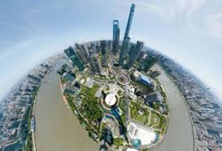
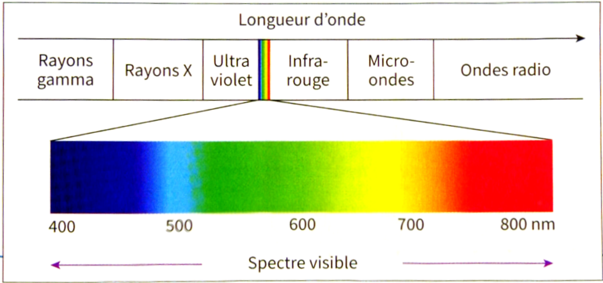
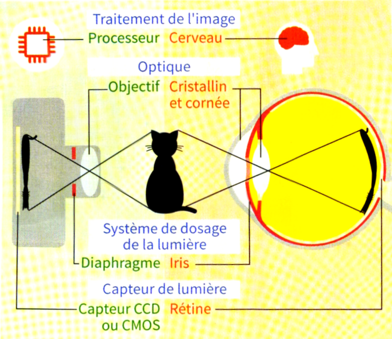
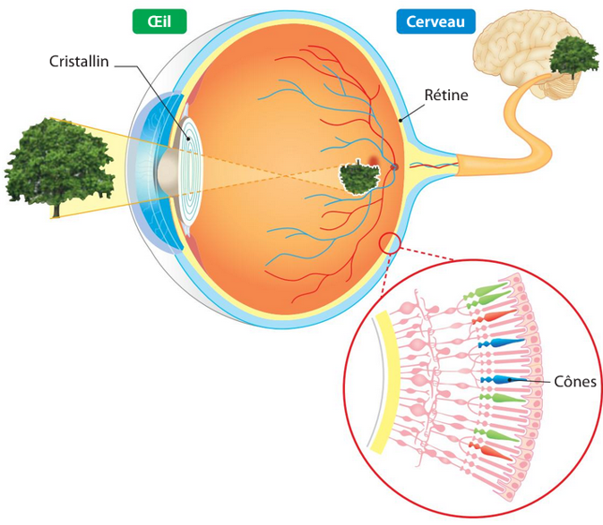
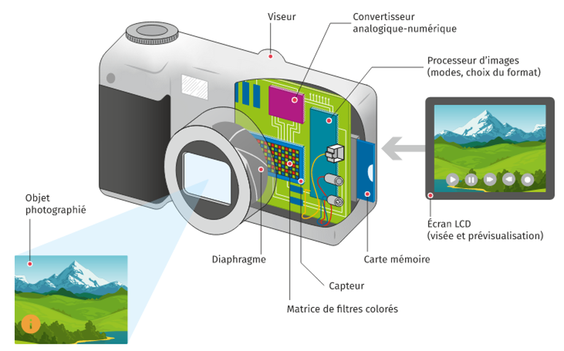
Le capteur photographique (CCD ou CMOS) est un composant électronique photosensible, il convertit la lumière reçue en signaux électriques.
Le filtre de Bayer, présent devant le capteur, permet de n’obtenir qu’une seule et unique information par photosite.
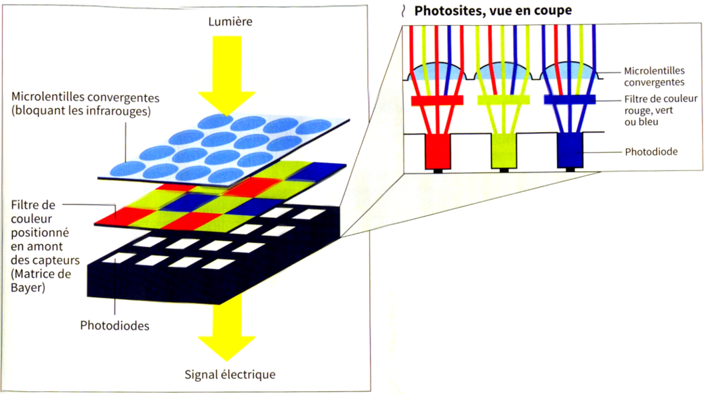
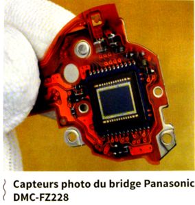
Une photographie dépend des paramètres suivants :
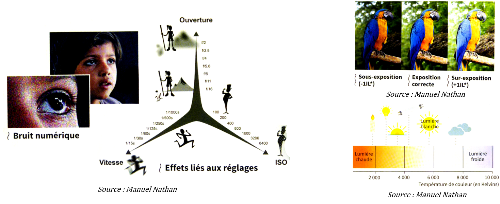
Algorithme de stabilisation mécanique
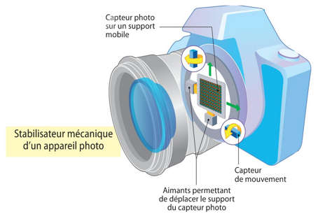
Algorithme de correction du flou
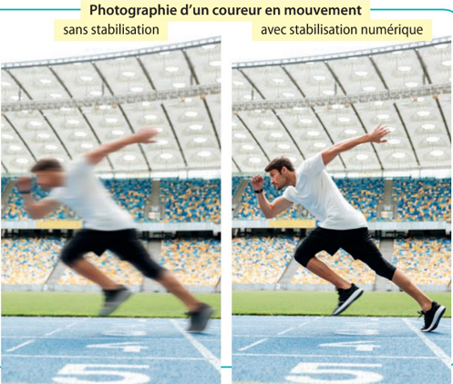
Algorithme d’aide à la mise au point ou Focus Peaking
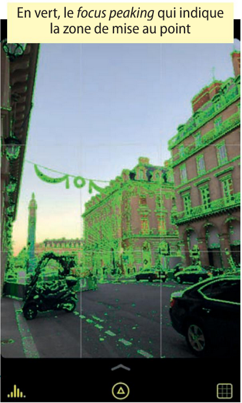
Algorithme de correction des couleurs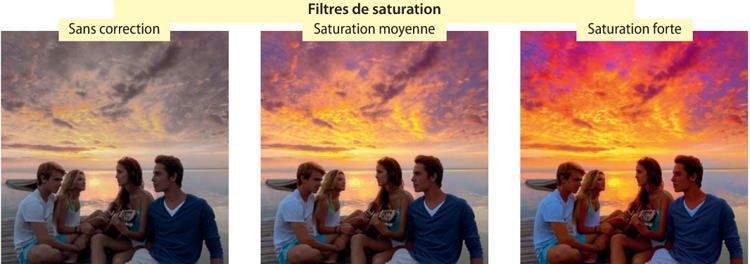
HDR – High Dynamic Range
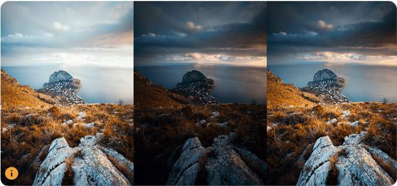
Pixel (picture element) : plus petit élément d’une image numérique.
La définition d’une image : le nombre de pixels la composant.
La résolution : le nombre de pixels par unité de longueur. En dpi, dot per inch.
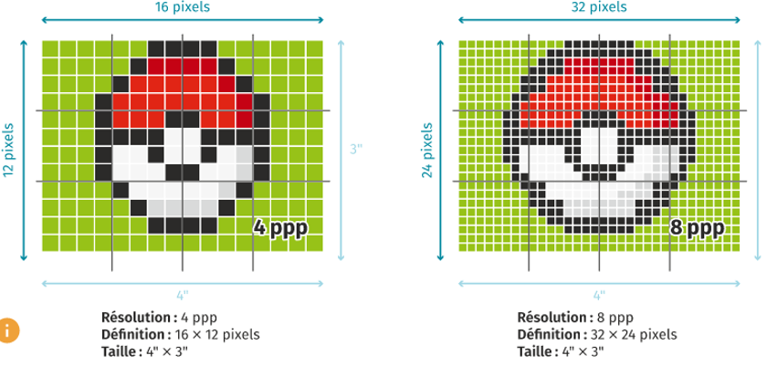
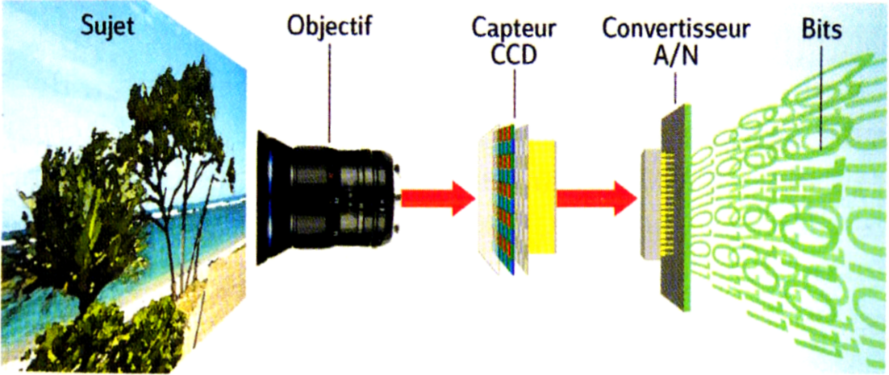
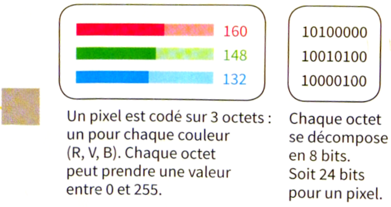
Le dématriçage permet de recréer les couleurs « réelles » de chaque pixel, en mélangeant les données monochromes des pixels voisins présents dans le fichier brut :
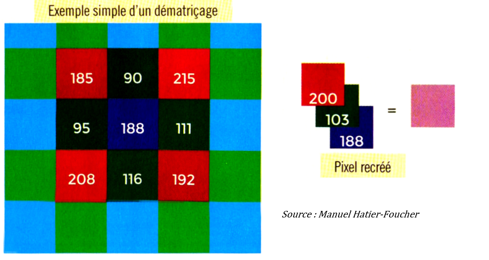
Codage des couleurs RVB ;
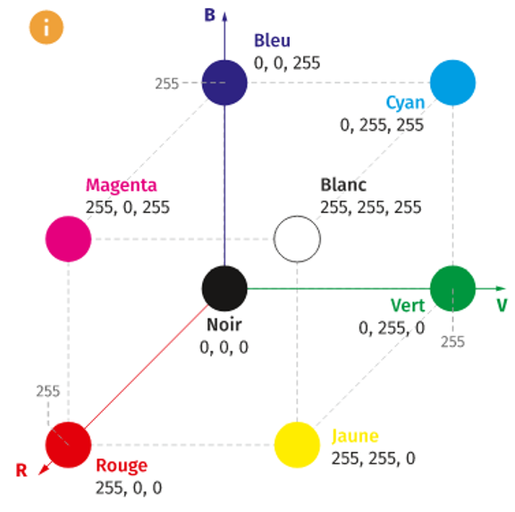
Le nombre de couleurs différentes que peut composer une image s’appelle la profondeur de couleurs et s’exprime en bits par pixel (bpp).
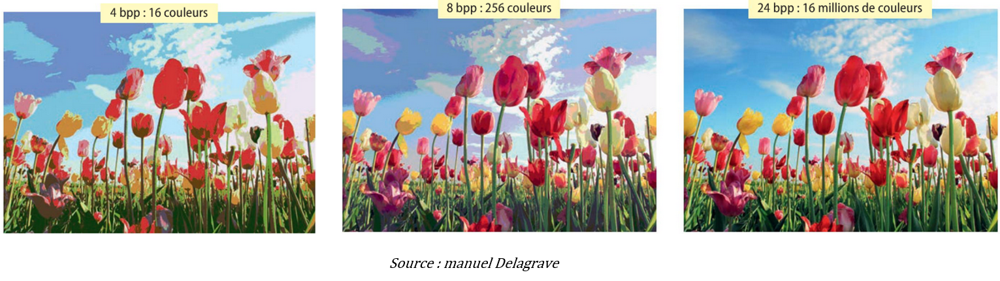
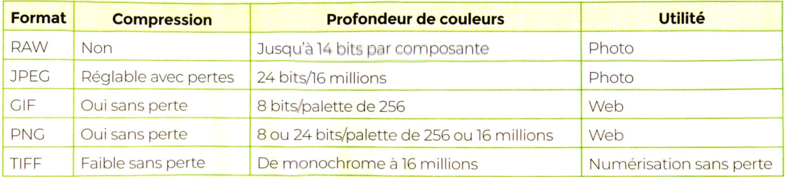
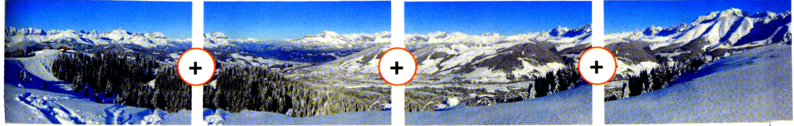
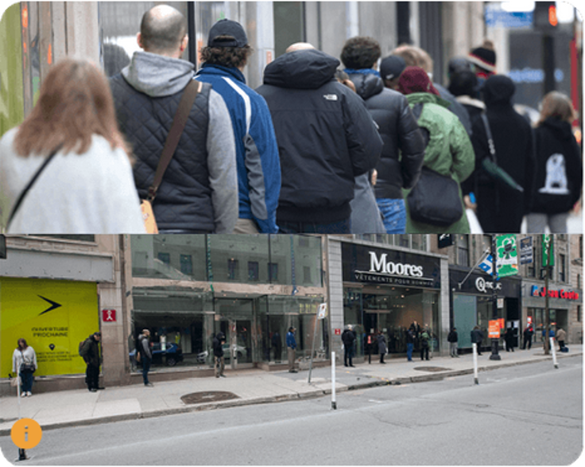
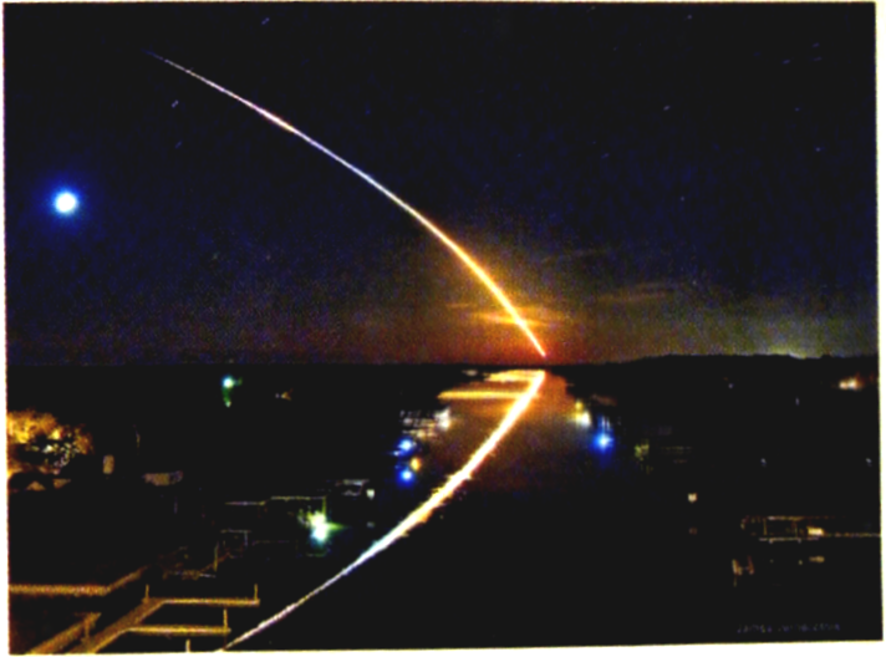
Source : terrafemina.com
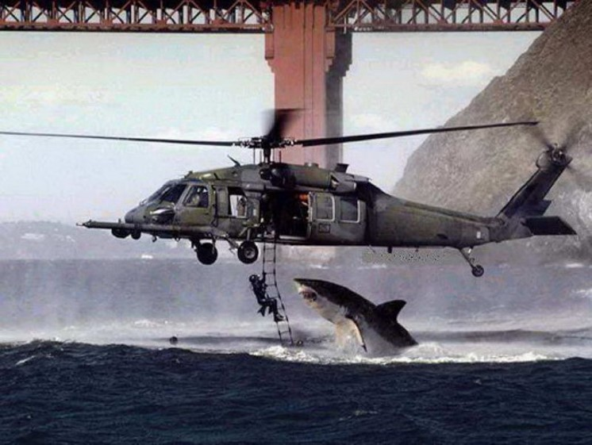
Avant l'IA : visages générés par ordinateur :
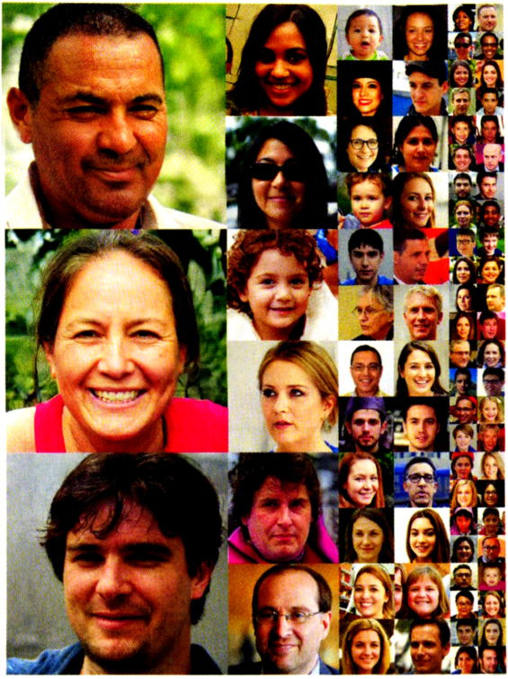
Les métadonnées, appelées aussi données EXIF (pour « Exchangeable image file format »), donnent des indications sur le type d’appareil utilisé,
l’heure et, parfois, la localisation grâce aux données GPS enregistrées au moment de la prise de vue.
On peut y accéder dans les propriétés du fichier :
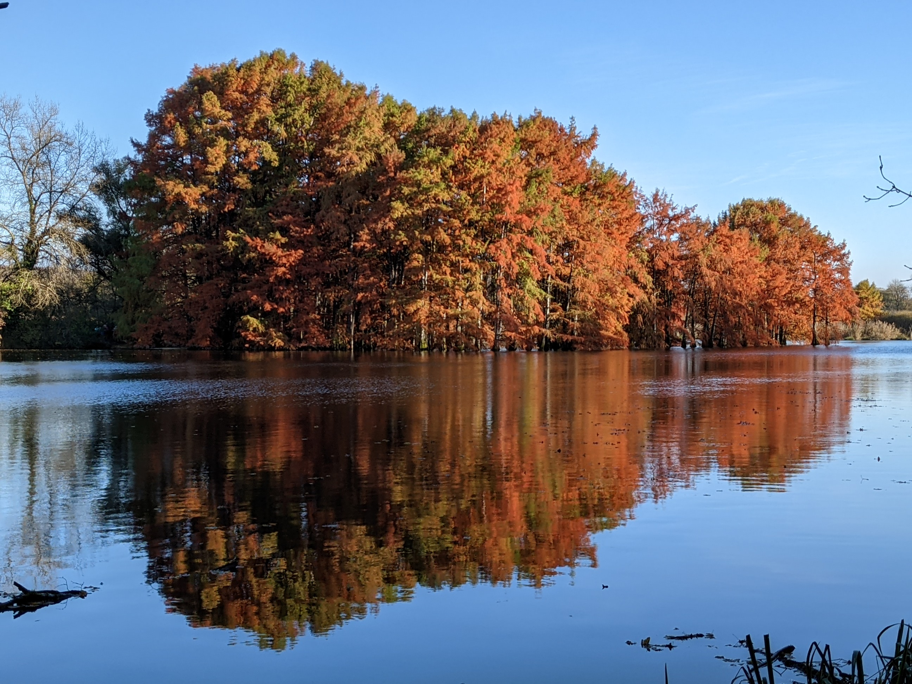
Ou, pour des données plus nombreuses, sur un site tel que metapicz.com